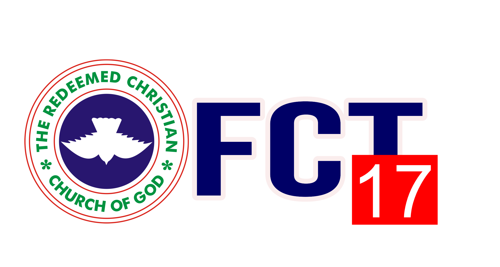

Abuja, Nigeria
To make heaven. To take as many people with us. To have a member of RCCG in every family of all nations. To accomplish No. 1 above, holiness will be our lifestyle. To accomplish No. 2 and 3 above, we will plant churches within five minutes walking distance in every city and town of developing countries and within five minutes driving distance in every city and town of developed countries. We will pursue these objectives until every Nation in the world is reached for the Lord Jesus Christ.
Founded in 1952 by Pa Josiah Akindayomi, RCCG has grown from a small fellowship in Lagos, Nigeria to a global ministry with presence in 197 countries, over 9 million members, and more than 50,000 parishes worldwide. We are committed to fulfilling God's covenant to take the world for Jesus Christ.
Holiness: Our lifestyle and foundation
Obedience: To God's Word and calling
Faithfulness: In service and covenant
Excellence: In all we do for God
Love: For God and humanity
Learn about our mission, vision, and three pillars of faith
View our weekly schedule and service times
Check out upcoming events and special programs
Get involved in our various ministry departments
View photos from our worship and community activities
Support God's work through tithes and offerings
We are a vibrant community of believers committed to worship, fellowship, and service. Christ the Anchor Parish is part of the Redeemed Christian Church of God (RCCG) family, serving under FCT Province 17 in Abuja, Nigeria.
Whether you're visiting for the first time or have been with us for years, we welcome you to experience the warmth, love, and spiritual nourishment that define our parish. Join us for Sunday service or any of our weekly programs.